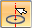
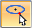

Helical Curve command bar
The Helical Curve command bar is displayed when you select the Surfacing tab→Curves group→Helical Curve  command.
command.

Axis Step-
Identify the axis by selecting keypoints, points in space, a line, a circle, or the face of a cylinder or cone.
- Keypoint or Point in Space
-
You can use three points to define the axis and start point of a helical curve. The first two points determine the axis, and the last point you select determines the start point of the curve. You can select points from existing geometry or in open space. After you define the axis, the command bar automatically advances to the Start Point Step to select the start point.
- Line
-
When you select a line to use as the axis, the origin of the curve is determined by where you click the line. For example, on a vertical line you can click the top half of the line to orient the curve from top to bottom. Click the bottom half of the line to orient the curve from bottom to top. After you define the axis, the command bar automatically advances to the Start Point Step to select the start point.
- Circle
-
When you select a circle, the axis of the circle becomes the axis of the helix, and the diameter of the circle becomes the initial diameter of the helix. Use the steering wheel to determine the direction of the curve. Selecting a circle automatically advances the command bar to the Parameters Step. To change the origin of the start point, click the Start Point Step icon, ensure that the Keypoint options you want to use in the selection process are identified, and then select a new start point.
- Face of a cylinder or cone
-
After you select a face or a circumference, a helical curve that conforms to the shape is constructed and the command bar automatically advances to the Parameters Step. To change the origin of the start point, click the Start Point Step icon, ensure that the Keypoint options you want to use in the selection process are identified, and select a new start point.

Start Point Step-
Based on how the helical curve was started, the Start Point Step may be automatically skipped. To select the start point or change a start point, click the Start Point Step icon, ensure that the Keypoint options you want to use in the selection process are identified, and select a new start point.
- Keypoints
-
You can use the Keypoints option to identify which types of keypoints can be located when you identify the axis points or start point.
- Parameters Step
-
The Helical Curve Parameters dialog box opens to define all the characteristics of the helical curve. See Helical Curve Parameters dialog box for more information.
- Preview
-
Previews the curve you defined. Selecting this option closes the Helical Curve Parameters dialog box.
- Show/Hide Parameters Dialog
-
Shows or hides the Helical Curve Parameters dialog box.
 Saved Settings
Saved Settings -
You can use this option to create the new helical curve based on previously saved parameters.
- Name
-
Enter the name you want to display in PathFinder, under the Curves collector, for the helical curve you are defining.
- Finish
-
Completes the helical curve being defined and closes the command.
- Cancel
-
Exits the command.
When the curve is depicted, the yellow point identifies the origin. In a compound helical curve, a red point is displayed for each defined point in the curve.
How do I
Create a helical curveCreate a spiral curve
Look up more details
Helical Curve commandHelical Curve Parameters dialog box